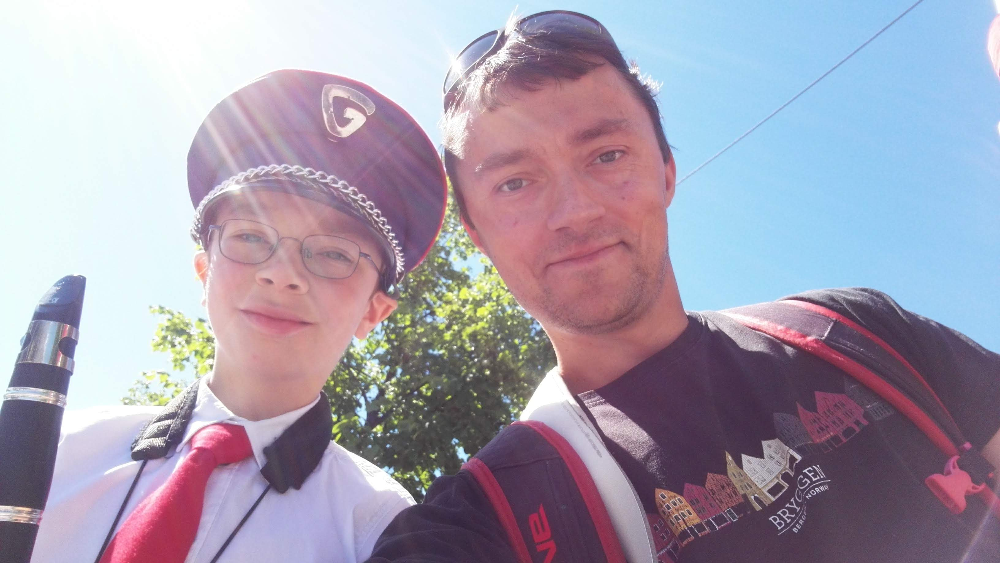
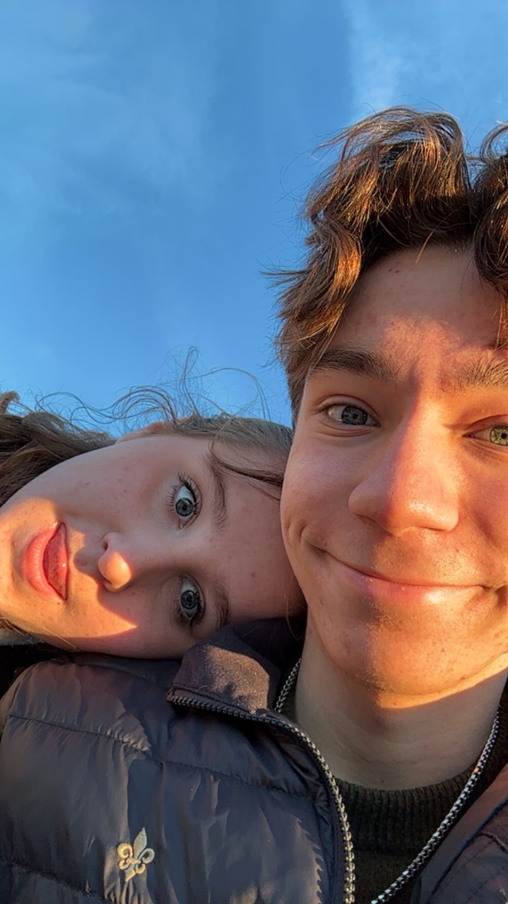
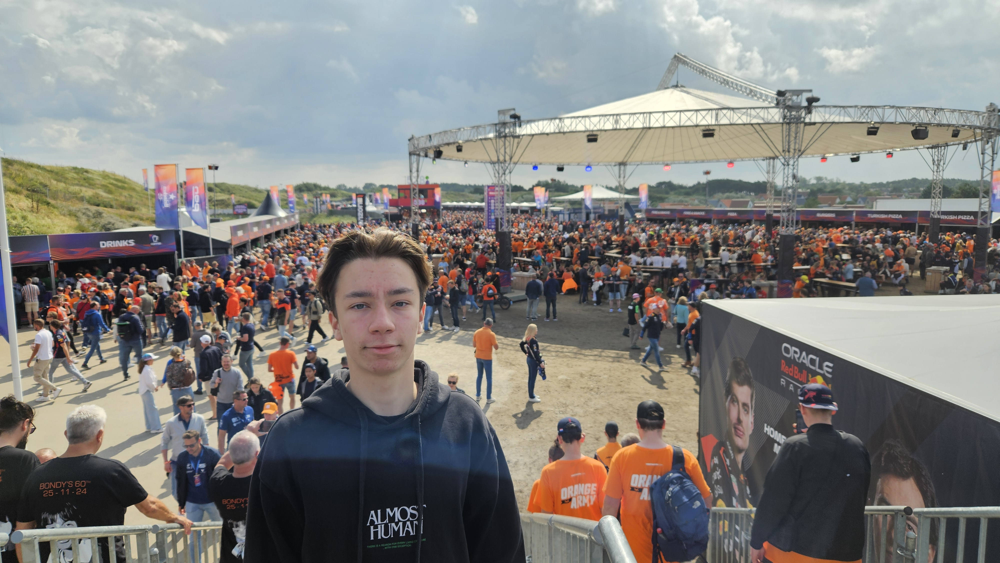

Jeg har spilt i korps i nesten 10år og det har gjort musikk til en stor del av livet mitt. Jeg har spilt klarinett i skolekorps helt siden jeg begynte der, men de siste få årene har jeg spilt bassklarinett i stedet. Jeg har nå også spilt i Asker og Bærum ungdomskorps i litt over et år, og der har jeg bare spilt bassklarinett.

Veldig mye av fritiden min tilbringer jeg med venner og familie. Av og til trener jeg med venner, og noen ganger står jeg på slalåm med dem. Fra tid til annen er jeg med familien og går tur eller ser på film sammen. Mesteparten av tiden, imidlertid, er jeg med kjæresten min. Hun gir meg mye mer glede enn alle andre, og jeg går aldri lei av henne, så det sier seg selv at vi tilbringer mye tid sammen. Med henne gjør jeg alt mulig.

Jeg er også glad i formel 1 og fart generelt. Jeg har sett på formel 1 i noen år nå og vært på et res selv også. Jeg har til og med en liten samling av Lego F1 biler hjemme. I tillegg til å være glad i formel 1, er jeg glad i fart generelt også. Jeg er glad i å kjøre fort når jeg øvelseskjører, innenfor fartsgrensa, men det er vanskelig å ikke overstige den. Når jeg står på slalåm er jeg også glad i å kjøre raskest mulig. Det er bare når jeg skal gjøre triks og trenger denne lysten på fart mest mulig at den plutselig forsvinner...